About us
A school devoted to the awakening of consciousness and the mastery of the self. Our path weaves Ancient Teachings, Alchemy and the 96 Universal Laws to reconnect with the deepest dimension of being: the Soul.
Our starting point is the most ancient of teachings: Γνῶθι Σεαυτόν — Know thyself. The ancients carved it on the temple of Delphi because they knew that without self-knowledge there is no true freedom. We live mostly asleep: reacting mechanically, driven by conditioning and fears that we mistake for free choices.
No man is more enslaved than the one who falsely believes himself free.
— Johann Wolfgang von Goethe
Continue readingShow less
The path of Know thyself is a path of freedom. Spiritual alchemy teaches us to transmute each of our flaws into its opposite quality, lead into gold, transforming what is mechanical into what is conscious.
Who are we, deep down? If we observe ourselves honestly, we discover we are not a single block but a plurality of voices: like a matryoshka crowded with characters taking turns at the helm of our ship. One says "yes," another holds back, a third judges, a fourth flees. We believe we choose, yet often it is merely the loudest character making the decision, while the quieter, wounded parts remain submerged.
The real work, then, is that of an orchestra conductor: getting to know each voice, each instrument (how it works, when it activates, what it produces) and learning to make them play together, in a symphony consistent with our most authentic being. The goal is not to eliminate parts of ourselves, but to integrate them. Individuum, from Latin, means "undivided": something fragmented that we learn to reunify. Only then can we live a life congruent with ourselves and act from within: Aristotle's enérgheia, the pure act of action connected to being. True freedom is this: choosing how to respond to what happens.
The School was created to offer the tools for this awakening. Not knowledge to accumulate, but a daily practice of observation, presence and work on oneself that allows us to become masters of our own carriage rather than being dragged by it. It is a laboratory in the most ancient sense of the word, from the Latin labor, oriented and conscious effort; an effort of the spirit, in which human will unites with the call to heaven. We live in an age where we fear artificial intelligence may escape our control; yet this is exactly what has already happened, for millennia, with our organic intelligence: the biological machine has taken command, and the Soul can no longer, on its own, disengage the autopilot. Realigning one's gaze with that of the Soul is the first act of freedom.
What at first seems like mere training against mechanicity, at some point becomes a natural attitude: that seed has taken root and become a living plant within us. This is why the School exists: not to give answers, but to provide the tools with which each person can find their own.
Ancient Teachings
The path draws from diverse traditions: Initiatic Science, Gurdjieff's Fourth Way, Hermetic Magic, Kabbalah, the Enneagram, Anthroposophy, Theosophy, Buddhism, Taoism, Shamanism. Different languages saying the same thing: from the Hindu OM to the Johannine Logos, at the centre there is always a creative sound that shapes life. The human being is its guardian and co-creator. Their task is to rediscover that programme of the soul, more ancient and profound than any acquired conditioning.
Structure & access
Seminars are held in person in Bari and online, allowing anyone to access the teachings regardless of their location.
The path spans 7 years (3 foundational + 4 advanced), with Sunday meetings at regular intervals. Each year builds on the previous one, guiding the student through a progressive and grounded transformation.
Introduction video
A look at the School
discover our path
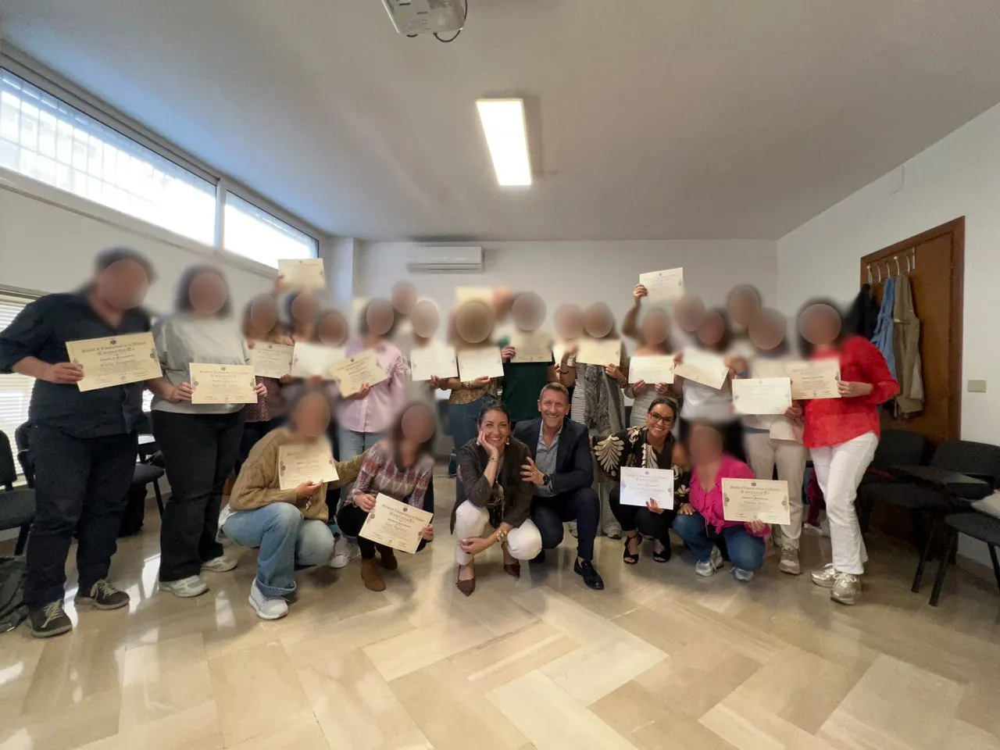
Awareness & Alchemy
What we study and how we work: the two pillars of the path.
Awareness
- Self-knowledge — lower and higher nature
- Knowledge of the 96 Universal Laws
- Ancient Teachings: Initiatic Science, Fourth Way, Kabbalah, Hermetic Magic, Agni Yoga, Buddhism, Taoism, Shamanism...
- Understanding of Sacred Texts (primarily the Gospel)
- Symbolic study of Myth and Archetypes
Alchemy
- Transmutation of lead into gold: Shadow into Light
- Practical training with inner Alchemy exercises
- Applying the Universal Laws in daily life
- Transmuting one's everyday life
- Becoming conscious creators of one's own reality
The School's path is not linear but spiral: each turn brings us back to the same knots from a deeper level. What was invisible becomes observable; what was observable becomes transformable.
The School's methodPresence & Observation
Only 5% of our life is conscious. The remaining 95% is governed by unconscious programmes, like an autopilot. The first step is to develop the Alchemical Double, the inner Observer: observing without judging. Because time does not heal. Presence does.
Read moreShow less
Meditating not as a practice but as a mental attitude: self-observation, divided attention, unfiltered introspection. Every time we unconsciously give in to a vice, an addiction, an automatic reaction, we are surrendering our sovereignty, the personal power that was bestowed upon us. Reclaiming it begins with a simple gesture: observing.
The Alchemical Fire
Unprocessed emotions become poisons that intoxicate body, mind and relationships. The Alchemical Fire arises from the friction between inner discomfort and conscious observation: it is the fire that ignites transformation. Knowing is not enough; one must become what one knows.
Read moreShow less
The work is similar to postural exercise for the mind: we loosen the neural pathways of distorted thinking, the hypertrophic ones that make us react as victims, and strengthen the pathways of correct thinking, until the new posture becomes natural.
Our wounds are not merely something to heal: they are the very engine of evolution. But we cannot change our life without having changed our essence, otherwise everything will realign and return to how it was before. What is observed and named loses its power. The mechanism does not vanish: it becomes visible. And when it is visible, one can choose.
Taking Back the Reins
Gurdjieff describes the human being as a carriage without a master: the physical body is the carriage, the emotions are the impulsive horses, the mind the distracted coachman, and consciousness the sleeping passenger. As long as the passenger sleeps, the carriage drifts.
Read moreShow less
The work on oneself consists in awakening the passenger: recognising one's automatisms, masks, conditioning, and gradually becoming masters of one's own life. No longer victims and slaves of the external, but conscious creators of one's own path.
The Ascent
Ancient tradition describes the soul's journey as a Tree of Life with ten fruits, ten divine attributes that the human being must embody to return to their origin. To do so they must traverse seven initiations and orient themselves through their own Soul Ray, the unique note that connects each person to their divine nature.
Read moreShow less
Along the way, the seven wounds of the soul (rejection, abandonment, betrayal, humiliation, injustice, abuse, negligence) are not obstacles but raw material: transmuting them means embodying the corresponding seven spiritual talents and building, piece by piece, one's own Philosopher's Stone.
The path is not merely shedding what we are not: it is rediscovering the Word, the creative utterance, and using it consciously, with a mind connected to the heart.
Abracadabra — I create as I speak.
Seven years of inner work. The first three form a complete cycle; the following four deepen the operative practice.
Transmutative Alchemy & the Fourth Way
Gurdjieff's Carriage and the awakening of consciousness. The 96 Universal Laws, the Alchemical Fire, the three phases of the Great Work (Nigredo, Albedo, Rubedo). Self-observation as the first tool of transformation.
Enneagram & Numerology
The Sacred Geometry of the Soul: the 9 Enneatypes through the three centres (instinctive, emotional, mental). Passions, fixations and Numerological Archetypes. The Law of Polarity, the Tao and the discovery of one's Mission.
Kabbalah & Christic Teaching
The Tree of Life and the Sephiroth, Sacred Geometry and the Creative Word. The 7 Rays, the 7 Initiations and the initiatic life of Christ. Da'at, the hidden Sephira, and the path towards Shamballah.
Theosophy & Anthroposophy
The 7 subtle bodies and the Monad through the 4 kingdoms. Life after death: Kamaloka, Devachan and the law of Reincarnation. The formation of destiny, Karma and the Violet Flame of Saint Germain.
Hermetic Philosophy & the 7 Principles
Hermes Trismegistus and the Emerald Tablets. The Kybalion and the 7 Hermetic Principles: Mentalism, Correspondence, Vibration, Rhythm, Gender, Causation. Mental Transmutation and Magic through the 5 Elements.
Emerald Tablets & Archetypal Magic
The Propositions of the Emerald Tablets, Astral Wounds and Spiritual Talents. The incarnatory process, Astrological Archetypes and the 7 Keys of Inner Realisation.
Operative Magic & Shamanism
The shamanic journey and the drum as a vehicle of consciousness. Kundalini awakening, Third Eye activation, White Theurgy and the Hebrew Letters. Final integration of the path.
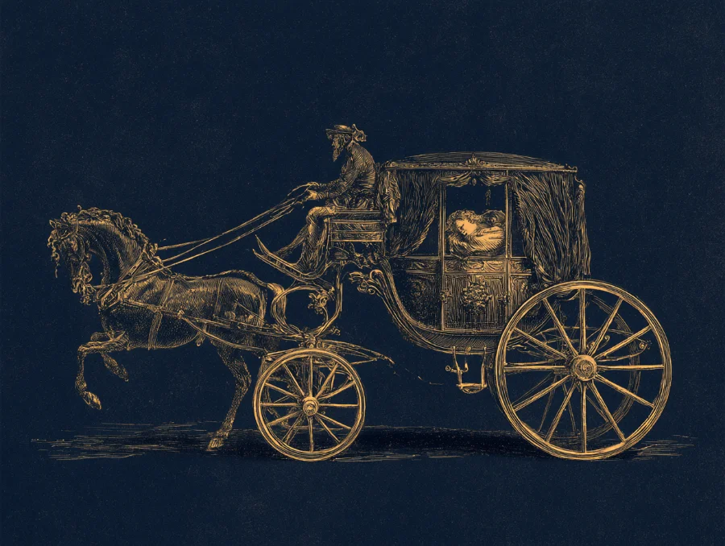
The Carriage metaphor
Gurdjieff compared the human being to a carriage drawn by horses, driven by a coachman, with a passenger asleep inside. When the passenger, that is consciousness, sleeps, the confused coachman lets the horses run with no destination.
Awakening begins when the passenger opens their eyes, takes hold of the reins and chooses the direction. Observing one's own automatisms is the first step towards awareness.
"Man's fundamental condition is sleep; man is asleep, his consciousness is hypnotised, confused; he does not know who he is, nor why he acts…"— G. I. Gurdjieff, Views from the Real World
A personalised journey, built around the specific evolutionary goal of the person undertaking it. It may arise from a moment of crisis, a delicate transition, or the drive to accelerate a transformation already underway.
The School
- Structured and shared educational path
- Manifesting one's Soul in daily life
- Ancient Teachings and the 96 Universal Laws
- Universal tools of Alchemy and self-observation
- Shared journey with other participants
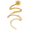
Individual Path- Personalised journey based on your evolutionary goal
- Arises from a moment of crisis or a delicate transition
- Work on the Unconscious through targeted sessions
- Illumination of shadow areas
- Intimate and concrete transformation
In the School you work together with others: you study the Laws, train with exercises, and the group acts as a mirror. In the Individual Path you work on a specific knot of your own, with the focused listening of a guide. Those attending the School who encounter a deep block can dissolve it in the individual path; those starting from the individual path often feel the need for a broader framework. That is why they work well together.
The Guides
They have walked for years the path they now teach. They lead individual and group journeys dedicated to awareness, inner growth and transformative Alchemy.

Anna Carla Digregorio
Guide & author
With a degree in Pharmacy, for over eleven years she managed a large Parapharmacy in the heart of Bari, transforming it into a centre dedicated to Integrated Health. Her journey led her from healing the body to healing the being: a natural passage, where science meets awareness.

Nicolaos Anifantis
Guide & author
A solid background in industrial pharmaceutical production, combined with a long research path that interweaves science, tradition and spirituality. From the chemical laboratory to the inner laboratory: a journey where scientific rigour becomes a tool of transformation.

Eleonora Digregorio
Collaborator · lessons and experiential seminars
Ambula ab intra — walk from within. Eleonora supports the guides in lessons and experiential seminars, bringing her own daily practice and a sensitivity cultivated through the School's path.
Our events
Moments lived together, between teaching and nature.
The 7 Chakras — Loving Oneself
8 July 2023 · Masseria Chinunno, Cassano (BA)
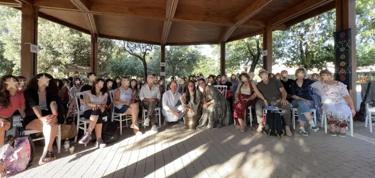
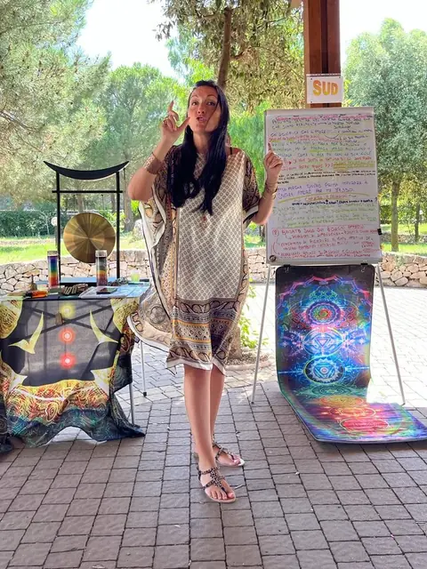
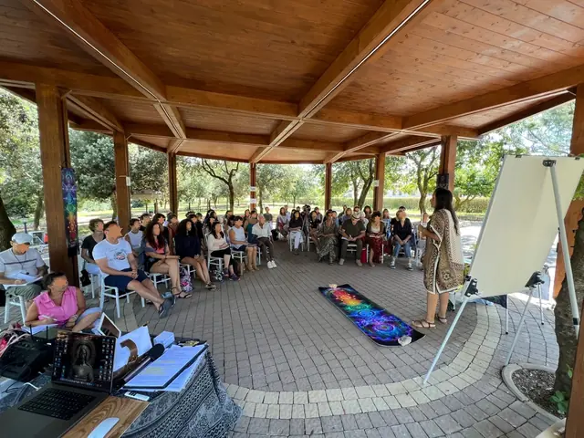
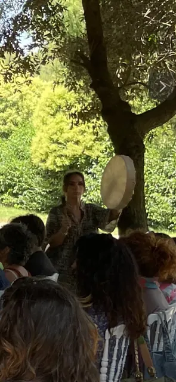
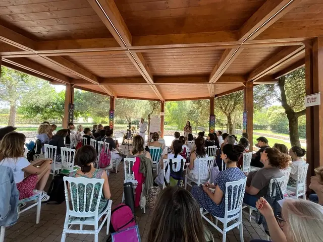
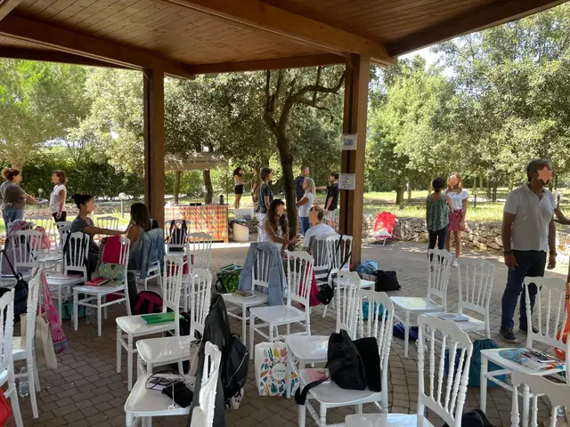
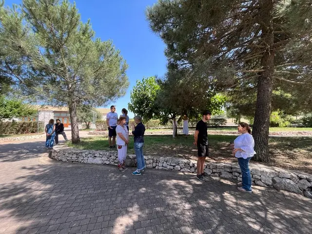
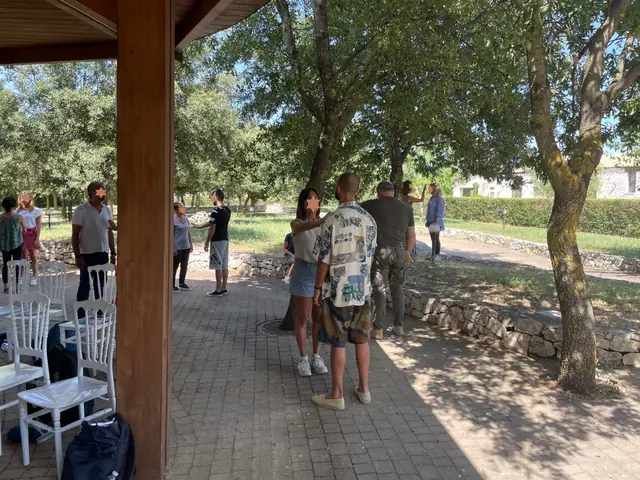
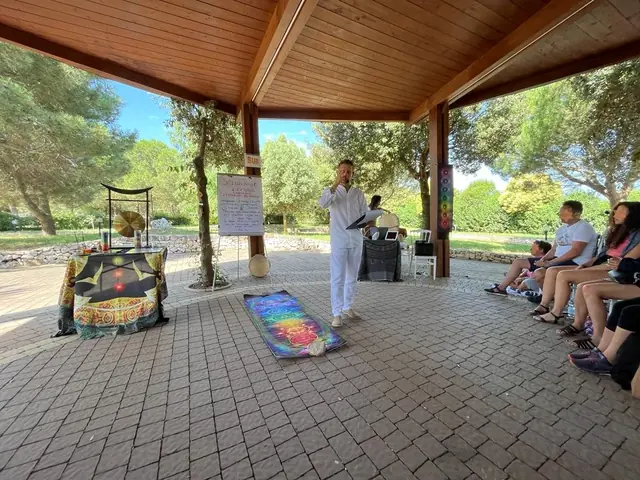
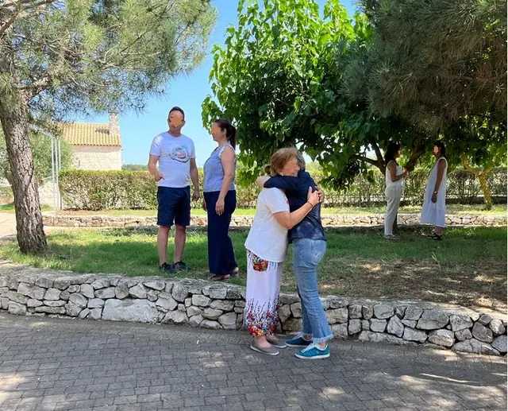
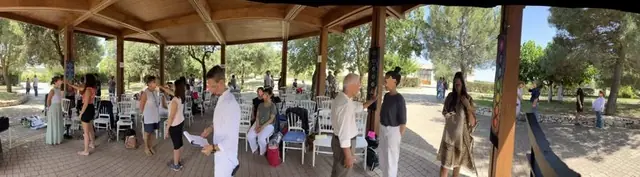
The School in person
Moments from lessons, circles in nature and gatherings
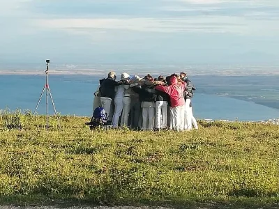
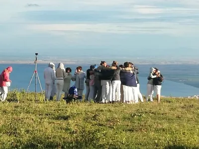
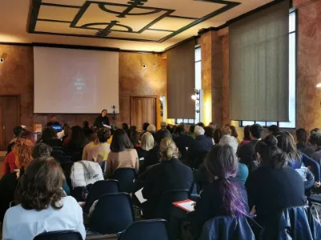
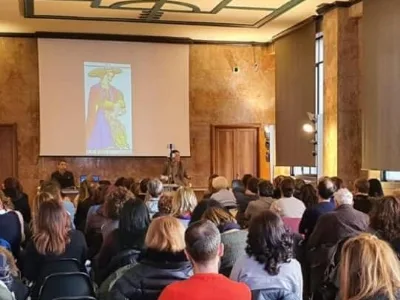
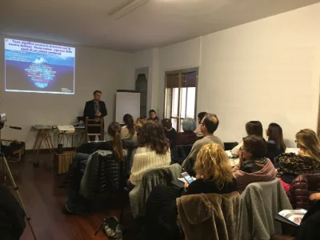
Lesson calendar
Seven years of progressive deepening, structured in annual cycles. Each lesson builds on the previous one: you do not accumulate knowledge, you transform into what you study.
The contribution
30 € / lesson
Pay as you go, no commitment
180 € / year 210 €
Years 1-3 only · 7 lessons, 1 offered by the School
Also available online · Start, pause and resume whenever you like
The Book
Anna Carla Digregorio and Nicolaos Anifantis gather in these pages the heart of the School's teachings: a practical path to recognise and dissolve the inner blocks that separate us from our authentic Abundance.
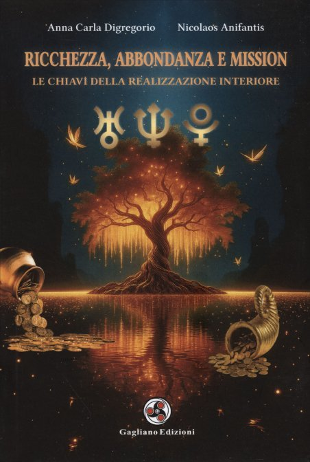
Ricchezza, Abbondanza e Mission
The keys to inner realisation
The universal Laws of prosperity and spiritual evolution become concrete tools to dissolve blocks and release limiting patterns. Archetypal keys and ancient wisdoms guide us to recognise Abundance as a natural state to inhabit, not a prize to conquer.
Aim for inner Abundance, and Wealth in matter will follow. Realisation is not a destination, but a state of Being. Anna Carla Digregorio & Nicolaos Anifantis
22
Self-sabotages
The unconscious mechanisms that hinder Realisation. Recognising them is the first alchemical act.
The unconscious mechanisms that hinder Realisation. Recognising them is the first alchemical act: every limitation, seen with awareness, becomes a tool of self-knowledge and a doorway to its opposite quality.
Among these: fear of change, difficulty in receiving, guilt and shame, not recognising one's own value, limiting beliefs about money, lack of gratitude, confusion between commitment and effort, attachment to outcomes, impatience, and disconnection from the material plane.
6
Universal Laws
The forces that sustain Abundance: frequencies to embody in one's life.
Authentic Wealth is not conquered, it is welcomed. The Six Laws that sustain Abundance are active forces to attune to: frequencies to embody in one's life, rather than rules to follow.
Law of Gestation, Law of Attraction, Law of Expectation, Law of Letting Go, Law of Abundance, Law of Personal Power.
3
Planetary Archetypes
Uranus, Neptune and Pluto as symbolic maps to navigate daily trials.
Uranus, Neptune and Pluto as symbolic maps to navigate daily trials and access the three dimensions of Being.
Uranus — Freedom and authenticity
Uranus asks us to free ourselves from what we are not, to become instruments of what we came to bring. Its trials are sudden changes, epiphanies that force us to abandon old beliefs.
Read moreShow less
Like a bolt of lightning that rips through the sky, it illuminates what was hidden in shadow and reveals a new path. Like a barren tree that suddenly comes back to life.
"The truth shall set you free."
Neptune — Spiritual connection
Neptune asks us to dissolve the selfish and separative ego to remember that all is One, that every being is part of a single great design. Its trials move on the boundary between spirituality and illusion, demanding discernment.
Read moreShow less
It is the infinite ocean that envelops everything. The mist that blurs boundaries. A river flowing toward the sea: gradually its waters merge with those of the ocean, losing their separative identity to become part of something greater.
"Seek first the kingdom of God and His righteousness, and all these things shall be added unto you."
Pluto — Transformation and healing
Pluto asks us to face our own shadows and pass through the inner deaths necessary to bring out the hidden gold: it is the alchemist's journey. Its trials are deep crises, confrontation with the unconscious, breaking of habits and repeated patterns.
Read moreShow less
It is like the fire of a volcano, invisible to the eye but capable of transforming everything it touches. For years the lava flows in the depths of the earth, accumulating energy, until a sudden eruption brings it to light, destroying the old to create new fertile ground.
"Whoever wishes to save their life will lose it, but whoever loses it for my sake will find it."
Wealth
What is already within us and manifests outwardly as a reflection in the physical plane. Our intrinsic value is reflected in the world through our actions and our way of being.
Abundance
The potential of all we can receive and manifest. An inner feeling of fullness, a prosperous mindset, a disposition of the soul. It allows us to recognise the beauty and opportunities of life beyond what we possess.
Mission
The lighthouse that illuminates our path. The unique contribution we can offer to the world, the deep purpose for which we are here. Following one's Mission means living in alignment with our most authentic essence.
According to the ancient Vedic texts, Wealth manifests in eight forms. True well-being arises from the harmony of all these dimensions. Today the scale of priorities is often inverted: we start from the bottom, from material subsistence, forgetting that the highest form of Wealth is inner spiritual knowledge.
See the 8 formsShow less
1. Inner spiritual knowledge
2. Service: offering oneself in a project of value
3. Faith and courage
4. Self-confidence
5. Invisible virtues: qualities that generate respect and honour
6. Healthy relationships
7. Physical and mental health and well-being
8. Subsistence and solid economy
Presentations & events
8 events including conferences, festivals and presentations
What you ask us most often
Answers to the most common questions for those approaching the School.
Why a school? Can't I study on my own?
You can, of course, and every search is precious. But there is a substantial difference. The self-taught person gathers fragmented information from different books, videos and courses: half-truths that risk never composing into a complete picture. As Gestalt psychology teaches us, when our brain lacks data, it reconstructs it according to the most convenient model, not according to the real map.
A school instead offers a progressive structure, a consolidated method that has been travelled for centuries by those who preceded us. Like Virgil for Dante, the guides who have walked that path know where one falls, how to get back up, what escapes the eye. If the inner journey is a journey, could you ever reach the destination with an inaccurate map?
Is prior experience or spiritual training required?
No. The path starts from the foundations and accompanies each person from wherever they are. The only requirement is what in alchemy is called the thirst of the soul: that inner drive to know oneself more deeply which, once it arises, does not rest until it finds an answer. No prior reading or specific skills are needed.
How long does the path last and how is it structured?
The School spans 7 years: 3 foundational and 4 advanced. Even just the first 3 years constitute a complete path. Each year includes 7 lessons at the foundational levels and 3 at the advanced levels, at intervals of about six weeks. Lessons take place on Sunday mornings from 9:00 to 13:30.
How much does it cost?
The contribution is 30 € per lesson, payable each time. For those who prefer, an annual package is available (years 1-3, 7 lessons) at 180 € instead of 210 €, with one lesson offered by the School. There are no ties or obligations: we embody the principle of free choice. You can start, pause and resume whenever you wish.
Can I follow the lessons online?
Yes. Every lesson is recorded and made available through a reserved YouTube link, active permanently. You can rewatch the lesson as many times as you like, at your own pace. The in-person experience is naturally richer, but the online option ensures anyone can follow the path regardless of their location.
Can I start even if lessons have already begun?
Absolutely yes. Thanks to the recordings, you can catch up on previous lessons and join the path at any time. There are no barriers or time-bound prerequisites.
What do you actually study?
The heart of the path is the study of the 96 Universal Laws, the laws that govern the macrocosm and the microcosm. But knowledge is only half the work: the other half is alchemical practice, that is, the concrete transmutation of oneself in daily life. Among the tools: the Enneagram, Kabbalah, symbolic study of myths and archetypes, Hermetic Magic, self-observation exercises and guided meditations. Each year builds on the previous one, creating an organic and progressive path.
Is it a religious school?
No. The School integrates teachings from multiple spiritual traditions, from the Gospel to Eastern wisdom, from Hermeticism to depth psychology, seeking the common thread that unites them. Our approach is one of reductio ad unum: bringing the plurality of teachings back to a single underlying truth. We are not speaking of blind faith, but of a spiritual science to be verified through practice and direct experience.
Contact
If you feel something in these pages resonates with you, write to us. We will be happy to reply.
Write to us: we are here.
Thoughts & Inspirations
Words that have marked the journey. From masters of all ages, and from those who walk with the School today.
Learn by playing
Quizzes, scenarios and memory · 5-minute games · we recommend starting with The Awakening
Sleep, presence and self-remembering Responsibility
Magus or slave, within or without Emotions
Transmutation, non-judgment and forgiveness The Soul and the Machine
Personality, soul and imagination The Cosmic Laws
Mirror, octave, resonance The Invisible Worlds
Subtle bodies, planes and astral inhabitants The Warrior
Combat, discipline and presence Sacred Sexuality
Couple, sacred sexuality and the Heart
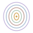
The Five VehiclesAura, chakras and subtle worlds
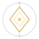
White MagicThe Fifteen Rules and the disciple
The inner path
Interactive stories with save · 10–20 minute sessions
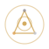
The Alchemist's PathInteractive journey in 3 acts · Nigredo, Albedo, Rubedo The Magus's Apprentice
Story with choices · 7 chapters · 6 endings The Seven Planes
Vertical exploration · 7 planes · 6 guardians The Great Journey
The death-rebirth cycle · 6 stages · 6 keepers
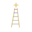
The Path of InitiationThe Pilgrim's ladder · 6 rungs · 6 guardians